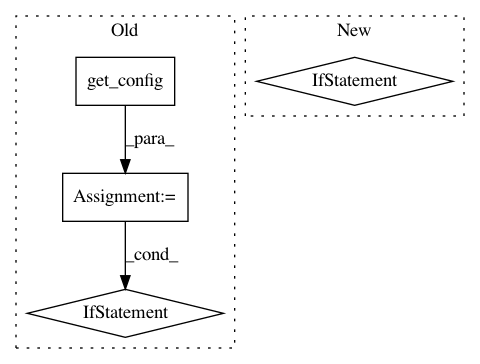

9c588045aaac0efbdcf29ec11a8005c5e98ec650,scripts/gui.py,FaceswapGui,close_app,#FaceswapGui#,164
Before Change
logger.debug("Close Requested")
confirm = messagebox.askokcancel
confirmtxt = "Processes are still running. Are you sure...?"
tk_vars = get_config().tk_vars
if (tk_vars["runningtask"].get()
and not confirm("Close", confirmtxt)):
logger.debug("Close Cancelled")
return
if tk_vars["runningtask"].get():
self.wrapper.task.terminate()
get_images().delete_preview()
self.quit()
After Change
tkinter has gone away
logger.debug("Close Requested")
if not self._confirm_close_on_running_task():
return
if not self._config.project.confirm_close():
return
if self._config.tk_vars["runningtask"].get():
In pattern: SUPERPATTERN
Frequency: 3
Non-data size: 4
Instances
Project Name: deepfakes/faceswap
Commit Name: 9c588045aaac0efbdcf29ec11a8005c5e98ec650
Time: 2019-11-22
Author: 36920800+torzdf@users.noreply.github.com
File Name: scripts/gui.py
Class Name: FaceswapGui
Method Name: close_app
Project Name: deepfakes/faceswap
Commit Name: 1daa7dc6f6df2cb22af40e641d93e808c830e774
Time: 2020-09-23
Author: 36920800+torzdf@users.noreply.github.com
File Name: lib/gui/display_command.py
Class Name: GraphDisplay
Method Name: display_item_set
Project Name: kundajelab/deeplift
Commit Name: 671ee67a03bd5bebf4c405af59eec45d3ca2a288
Time: 2017-04-14
Author: avanti.shrikumar@gmail.com
File Name: deeplift/conversion/keras_conversion.py
Class Name:
Method Name: convert_graph_model